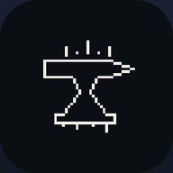

Albion Journal
Бесплатно · Mac и Windows
Скачать- 🗺 Кнопка мыши на портал Авалона — карточка зоны: тир, ресурсы, сундуки, данжи, время до закрытия
- 🌐 Общая карта дорог Авалона — дороги добавляются сами
- 🔔 Уведомления о нужных ресурсах и сундуках
- 💰 Цены рынка, фейм и урон за сессию